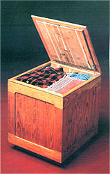
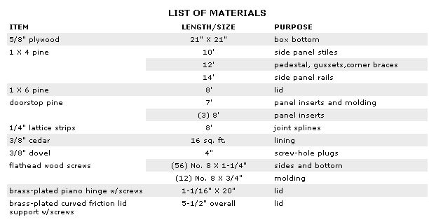
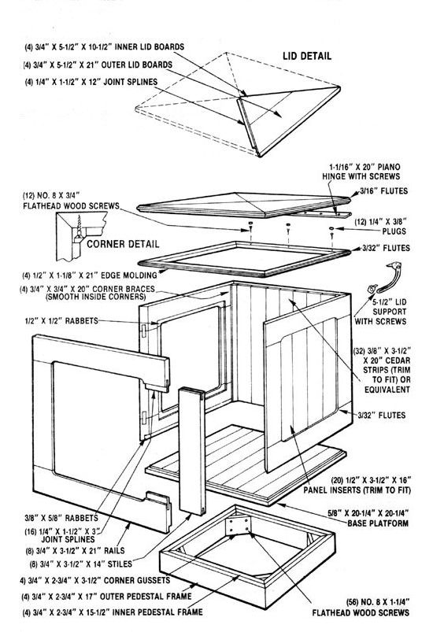

One of MOM's researchers discovers that a "half cedar" hope chest is far better than none.
Cedar has - for hundreds of years - been known for its insect-repellent qualities and its pleasant aroma. It's no wonder, then, that the wood has long been a mainstay for anyone building chests, wardrobes, or closets.
Unfortunately, aromatic cedar - in board form - is increasingly difficult to come by . . . and if you are fortunate enough to locate some, you'd better be prepared to pay dearly for it.
Still, the lure of the wood's natural fragrance is difcult to ignore, so MOTHER's research staffer Clarence Goosen decided to combine practicality with luxury . . . and build a chest of pine and plywood with a heart that's pure cedar.
GO SHOPPING . . . OR SCROUNGING
Clarence suggests starting the project by collecting your tools and materials. You'll need all the lumber and hardware called for in the accompanying list, plus some yellow carpenter's glue . . . a table saw to make accurate cuts . . . a power drill with several different sized bits and a countersink (a No. 8 Stanley Screw-Mate bit - which makes pilot, shank, and countersink hole in one pass - would be a real boon) . . . sandpaper in a variety of grits . . . some shellac (and pumice), clear varnish, or rung oil . . . a tape measure . . . a screwdriver . . . and, because you'll need to do some fancy finish work, a router. (Our router/shaper table, featured on page 160 of MOTHER NO. 61, would be an ideal tool for this project. See page 180 to order back issues.)
To make your lumber shopping less of a chore (if, that is, you don't have enough usable scraps around to piece your project together), notice that the list indicates specific board lengths that will allow you to arrange your cuts to produce a minimum of waste. Also, though staffer Goosen opted to use tongue-and-groove strip cedar for the lining, the cost of such lumber may motivate you to substitute the less expensive cedar particle board.
TAKE A FEW TIPS
MOTHER'S cabinet isn't difficult to assemble, but there are a few tricks you ought to be aware of that will make its construction easier. For one thing, the pedestal should be assembled first, and that entire support can be cut from your 12-foot length of 1 X 4. Notice, though, that it's only 2-3/4" tall, so you'll have to rip the entire 3-1/2"-wide board down to size before going on to make the miter cuts for the joints and gussets. (Save the leftover strip, though . . . you'll need it later.)
Each of the four identical sides starts with a 3/4"-thick, 21" X 21" perimeter frame that consists of two 14"-long vertical stiles and full-width top and bottom rails. These four components are held together at the joints with 1/4" X 1-1/2" X 3" splines that are glued into kerfs sliced across the mating surfaces of the seams.
A 3/8"-wide by 5/8"-deep rabbet, cut into the inner face of the bottom rail, will accommodate the 5/8" X 20-1/4" X 20-1/4" plywood base once everything's assembled, and a similar groove (this one 1/2" deep and 1/2" wide), routed into the inside edges of the framework, provides a seat for the 1/2" X 3-1/2" X 16" pine strips that make up the side panel inserts. Furthermore, the side edges of each completed square are 45°-mitered to the inside to form clean finish joints.
Here's a helpful hint: Cut the stiles from the 10-foot 1 X 4, and the rails from the 14-footer. Notice that Clarence has routed those boards - with the help of the shaper table, although a straightedge clamped to the work would do in a pinch - to a 3" width . . . and that he's also added contoured corners and decorated the frame adjacent to the panel inserts with a shallow fluted edge.
The sides are locked together with glue and No. 8 X 1-1/4" flathead wood screws (installed six to a corner and perpendicular to one another), which are fastened through 3/4" X 3/4" X 20" corner braces (these can be cut from your leftover strip of 12-foot 1 X 4). Once they're joined, the plywood bottom of the box can be glued into its rabbet, and the pedestal glued underneath and screwed in place from the inside.
To make the lid, you'll need to cut your 1 X 6 into eight pieces, four of which should be 21" and the other four 10-1/2" on their longest edges. Because these sections' ends meet each other in 45° joints across their widths (and because you'll naturally want to make the most efficient use of your wood), you'll have to plan your cuts carefully so the angled faces butt against each other . . . thus eliminating the wasteful "wedges" that'd otherwise be left between the slices.
These sections are, like the side frames, fastened together with 1/4" X 1-1/2" splines set and glued into the mating surfaces of each miter face. The straight edges of the boards are cemented at their joints, too . . . and when the lid's completed, 3/16" flutes can be added - with the router - to its outer edges.
You're not quite ready to install the lid, though. First, the cedar lining (whether it's strip or composition board) must be glued in place within the box. Then the edge molding should be rip-cut (from the leftover piece of 1/2" doorstop pine) into two 1/2" X 1-1/8" X 42" pieces . . . one edge of each of them fluted, with the router, to match the lid . . . and those two lengths sliced in half to create four 21"-long sections, each with mitered ends. A dozen No. 8 X 3/4" flathead wood screws hold the trim in place, and the heads should be countersunk so that short plugs - made from 3/8" dowel - can be glued over them and sanded flush.
Finally, the hinge can be recessed into the lid and into one of the molding sections (here's another job for that router!), and the hinge and cover can be fastened in place with the screws provided. A lid support, placed between one side of the box and the hinged top, will keep the chest open for access when needed.
With everything together, a coat of shellac can be applied and then smoothed with pumice to provide a glossy finish . . . or if you'd prefer a more subdued appearance, oil can be rubbed into the wood. No matter how you dress it, though, your homemade chest is sure to be a source of satisfaction . . . either to you - the builder - or to any lucky person who might receive it as a gift.
|
 |
 |
 |